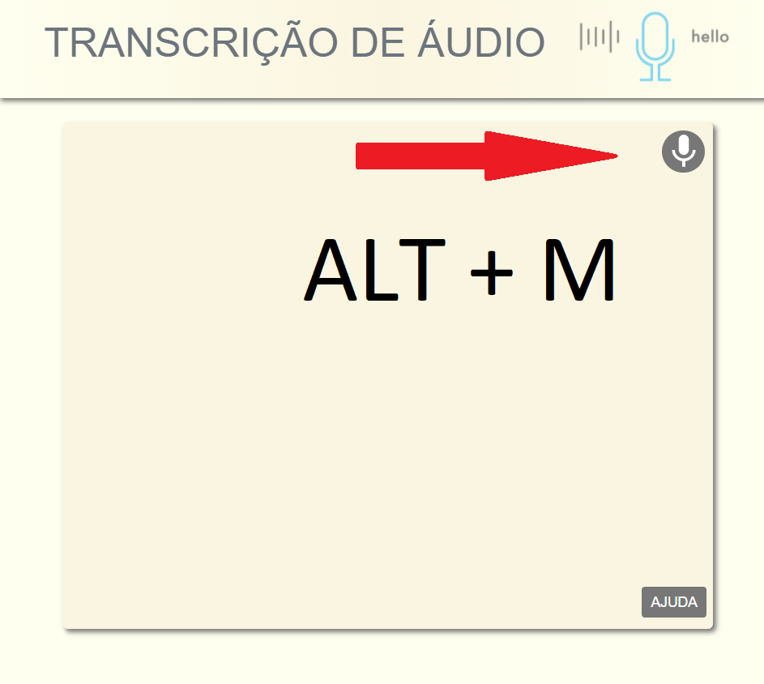

Clique no ícone do microfone ou use o atalho teclando Alt + M simultaneamente.
Dê permissão de acesso ao navegador (Google Chrome).
Pronuncie as palavras com boa dicção.
Utilize estas palavras chaves para caracteres especiais e formatação:
- Ponto Final - .
- Ponto de Interrogação - ?
- Ponto de Exclamação - !
- Virgula - ,
- Dois pontos - :
- Abre Parênteses - (
- Fecha Parênteses - )
- Abre Aspas - "
- Fecha Aspas - "
- Nova Linha - Executa uma quebra de linha com tabulação (4 espaços).
- Tabular - Executa 4 espaços
Caso tenha algum erro no texto, podes corrigi-lo clicando sobre ele e alterando com o teclado
Junto com o texto, no canto inferior esquerdo, aparecerá um botão para fazer o download.